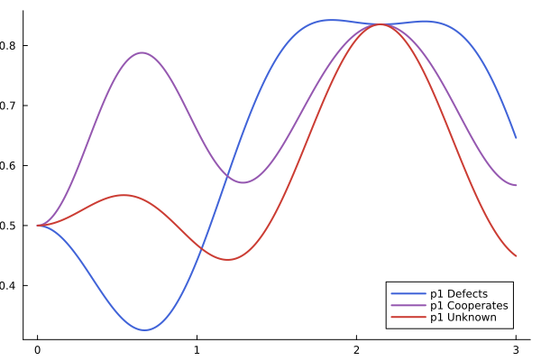
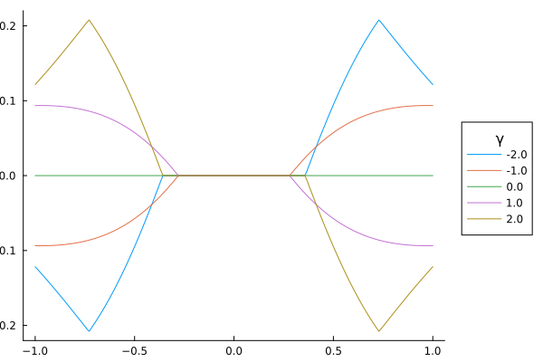

This page is under construction.
Introduction
In this tutorial, we present a quantum cognition model of interference effect's in the prisoner's dilemma. The goal is to provide a conceptual understanding of the model and how it produces interference effects. Before introducing the model, we will briefly describe the Prisoner's dilemma and the interference effect.
The Prisoner's Dilemma
The prisoner's dilemma (PD) is a two person interdependent decision making task from game theory. In a typical version of the PD, two players decide simultanouesly (i.e., without knowing the decision of the other) to cooperate or defect. The payoff each player recieves depends on both his or her choice and the choice of the other player. A typical payoff matrix is presented in the table below where entries $(x_1,x_2)$ correspond to the payoff given to player 1 and player 2, respectively. Assuming rational, self-interested players, the Nash equalibrium occurs when both players defect. Even though cooperating would lead to a better collective outcome (20 vs. 10), each individual has the incentive to defect. For example, if player 2 cooperates, player 1 recieves a better payoff by defecting (25 vs. 20). Alternatively, if player 2 defects, player 1 also recieves a better payoff by defecting (10 vs. 5).
| Player 2 (you) | |||
|---|---|---|---|
| Defect | Cooperate | ||
| Player 1 | Defect | (10,10) | (25,5) |
| Cooperate | (5,25) | (20,20) | |
Interference Effect
The interference effect occurs when decisions in the PD violate the law of total probability. Consider an experiment of the prisoner's dilemma with three conditions:
- Player 2 is told that player 1 defected: $R_2=d$
- Player 2 is told that player 1 cooperated: $R_2=c$
- Player 2 is not informed of player's action
The law of total probability requires:
\[\Pr(R_2=d) = \Pr(R_2=d \mid R_1=d) \Pr(R_1=d) + \Pr(R_2=d \mid R_1=c) \Pr(R_1=c),\]
where the left hand side corresponds to condition 3 and the terms on the right hand side correspond to conditions 1 and 2, respectively. When this inequality does not hold, an interference effect occurs.
An important property of the law of total probability is that it requires condition 3 to be a weighted average of conditions 1 and 2. This implies the following ordering of terms:
\[\min(\Pr(R_2=d \mid R_1=d), \Pr(R_2=d \mid R_1=c)) \leq \Pr(R_2=d) \leq \max(\Pr(R_2=d \mid R_2=1), \Pr(R_2=d \mid R_1=c)),\]
which is violated in human decision making, leading to an interference effect.
An interference effect is present in the data because the response probability in condition 3 is below the response probabilities in conditions 1 and 2. The predictions of the quantum model are shown in the last column.
Quantum Model
quantum prisoner's dilemma model (QPDM)
Bases
The QPDM consists of four basis states respesenting the four possible outcomes for defect (D) and cooperate (C):
\[\mathbf{B} = \{\ket{\textrm{DD}},\ket{\textrm{DC}},\ket{\textrm{CD}},\ket{\textrm{CC}}\}\]
where basis $\ket{ij}$ repesents the outcome in which the opponent chooses $i$ and you choose $j$. We will assume $\mathbf{B}$ is the standard basis, meaning each basis vector consists of a 1 with all other elements equal to zero, e.g.,
\[\ket{\textrm{DD}} = \begin{bmatrix} 1 \\ 0 \\ 0 \\ 0\\ \end{bmatrix}\]
Combining the basis vectors into a single matrix, we get the identity matrix:
\[\mathbf{I}_4 = \begin{bmatrix} 1 & 0 & 0 & 0\\ 0 & 1 & 0 & 0\\ 0 & 0 & 1 & 0\\ 0 & 0 & 0 & 1\\ \end{bmatrix}\]
States
The state of the cognitive system is a superposition (i.e. linear combination) over basis states:
\[\ket{\boldsymbol{\psi}} = \alpha_{\textrm{DD}} \ket{\textrm{DD}}+ \alpha_{\textrm{DC}} \ket{\textrm{DC}}+ \alpha_{\textrm{CD}} \ket{\textrm{CD}}+ \alpha_{\textrm{CC}} \ket{\textrm{CC}},\]
where $\lVert\ket{\boldsymbol{\psi}} \rVert = 1$. The coefficients can be written as:
\[\boldsymbol{\alpha} = \begin{bmatrix} \alpha_{\textrm{DD}} \\ \alpha_{\textrm{DC}} \\ \alpha_{\textrm{CD}} \\ \alpha_{\textrm{CC}} \\ \end{bmatrix}\]
The QPDM assumes the initial state of the decision maker is a uniform superposition over basis states:
\[\ket{\boldsymbol{\psi}_0} = \frac{1}{2}\begin{bmatrix} 1 \\ 1 \\ 1 \\ 1 \\ \end{bmatrix},\]
In conditions 1 and 2, the state is updated upon learning the decision of player 1: $\ket{\boldsymbol{\psi}_0} \rightarrow \ket{\boldsymbol{\psi}_k},k \in \{c,d\}$. When player 2 is told that player 1 defected, the state vector becomes:
\[\ket{\boldsymbol{\psi}_d} = \frac{1}{\sqrt{2}}\begin{bmatrix} 1 \\ 1 \\ 0 \\ 0 \\ \end{bmatrix},\]
indicating that the state collapsed onto the sub-space representing player 1 defected. Similarly, when player 2 is told that player 1 cooperated, the state collapses to the sub-space represnting the event player 1 cooperated, giving:
\[\ket{\boldsymbol{\psi}_c} = \frac{1}{\sqrt{2}}\begin{bmatrix} 0 \\ 0 \\ 1 \\ 1 \\ \end{bmatrix}.\]
Hamiltonian Matrices
Hamiltonian matrices govern the decision dynamics of the model. The Hamiltonian matrix $\mathbf{H}$ consists of two components: $\mathbf{H}_A$ is sensitive to the payoff matrix, and $\mathbf{H}_B$ is sensitive to cognitive dissonance between beliefs and actions. The component $\mathbf{H}_A$ is defined as follows:
\[\mathbf{H}_A = \begin{bmatrix} \mathbf{H}_{A_d} & \mathbf{0}\\ \mathbf{0} & \mathbf{H}_{A_c}\\ \end{bmatrix},\]
where
\[\mathbf{H}_{A_k} = \frac{1}{\sqrt{1 + \mu_k^2}}\begin{bmatrix} \mu_k & 1\\ 1 & -\mu_k\\ \end{bmatrix}.\]
Show Code
using Plots
prob_defect(μ, t) = .5 + (μ / (1 + μ^2)) * sin((π * t) / 2)^2
μs = range(-1, 1, length=5)
ts = range(0, π / 2, length=100)
plot_Ha = plot(ts, map(μ -> prob_defect.(μ, ts), μs), grid=false, label=μs',
xlabel="Time", ylabel="Probability Defect", legendtitle="μ")
savefig("h1_prob.png")"/home/runner/work/QuantumPrisonersDilemmaModel.jl/QuantumPrisonersDilemmaModel.jl/docs/build/h1_prob.png"
Action Selection
This selection describes the process of selecting an action and determining the defection probability. The time evolution is governed by the unitary transformation matrix which is given by:
\[\mathbf{U} = e^{-i \cdot t \cdot \mathbf{H}},\]
The QPDM makes the simplifying assumption that the decision is made after a relative short period of time where the wave function is at the maximum amplitude: $t=\frac{\pi}{2}$. Next, we define a projection matrix for computing the probability of defecting. The probability of defecting is the sum of outer products for DD and DC:
\[\mathbf{P} = \ket{\textrm{DD}} \bra{\textrm{DD}} + \ket{\textrm{DC}} \bra{\textrm{DC}} = \begin{bmatrix} 1 & 0 & 0 & 0\\ 0 & 0 & 0 & 0\\ 0 & 0 & 1 & 0\\ 0 & 0 & 0 & 0\\ \end{bmatrix}\]
The probability of player 2 defecting is given by the squared magnitude of the projection from the current state $\boldsymbol{\psi}_1 \rightarrow \boldsymbol{\psi}_2$. The probability that player 2 defects given that player 1 defected is:
\[\Pr(R_2=d \mid R_1=d) = \lVert\mathbf{P} \cdot \mathbf{U} \cdot \ket{\psi_d}\rVert^2\]
The probability that player 2 defects given that player 1 cooperated is:
\[\Pr(R_2=d \mid R_1=c) = \lVert\mathbf{P} \cdot \mathbf{U} \cdot \ket{\psi_c}\rVert^2\]
The probability that player 2 defects given that the action of player 1 is unknown is:
\[\Pr(R_2=d) = \lVert\mathbf{P} \cdot \mathbf{U} \cdot \ket{\psi_0}\rVert^2\]
QPDM Predictions
As a simple example, the code block illustrates how to generate the predictions in the table above. The first parameter $\mu_d$ is the utility for defecting. When no value is passed for the utility of cooperating, $\mu_d = \mu_c$. The parameter $\gamma$ is the entanglement parameter which aligns beliefs about the opponents action and one's own action. The model predictions are given below, along with the emprical data:
| Condition | Formula | Data | Model |
|---|---|---|---|
| 1 | $\Pr(R_1=d \mid R_2=d)$ | .84 | .81 |
| 2 | $\Pr(R_1=d \mid R_2=c)$ | .66 | .65 |
| 3 | $\Pr(R_1=d)$ | .55 | .57 |
The code used to generate the predictions can be viewed by expanding the code block below:
Show Code
using QuantumPrisonersDilemmaModel
model = QPDM(;μd=.51, γ=2.09)
preds = predict(model)3-element Vector{Float64}:
0.8057112841924796
0.6487381658136033
0.5652813506885033Dynamics
The plot below shows the dynamics of the model for each condition.
Show Code
using Plots
using QuantumPrisonersDilemmaModel
model = QPDM(;μd=.51, γ=2.09)
ts = range(0, 3, length=300)
preds = map(t -> predict(model; t), ts)
color = [RGB(.251,.388,.847) RGB(.584,.345,.689) RGB(.796,.235,.2)]
p1 = plot(ts, reduce(vcat, transpose.(preds)), grid=false,
label=["p1 Defects" "p1 Cooperates" "p1 Unknown"],
xlabel="Time", ylabel="Prob p2 Defects", linewidth=2; color)
savefig("probs_time.png")"/home/runner/work/QuantumPrisonersDilemmaModel.jl/QuantumPrisonersDilemmaModel.jl/docs/build/probs_time.png"
Interference Effects
The plot below shows the interference effect as a function of $\mu$ for multiple values of $\gamma$. In the simulations below, we fix $t=\frac{\pi}{2}$.
Show Code
using Plots
using QuantumPrisonersDilemmaModel
function compute_IE(;μ, γ)
preds = predict(QPDM(;μd=μ, γ))
if preds[3] < minimum(preds[1:2])
return preds[3] - minimum(preds[1:2])
elseif preds[3] > maximum(preds[1:2])
return preds[3] - maximum(preds[1:2])
end
return 0.0
end
map_mu(;μs, γ) = map(μ -> compute_IE(;μ, γ), μs)
compute_IE(;μ=.5, γ=2)
μs = range(-1, 1, length=200)
γs = range(-2, 2, length=5)
IEs = map(γ -> map_mu(;μs, γ), γs)
ie_plot = plot(μs, IEs, grid=false, label=γs',
xlabel="μ", ylabel="Interference Effect", legendtitle="γ", legend=:outerright)
savefig("ie_plot.png")"/home/runner/work/QuantumPrisonersDilemmaModel.jl/QuantumPrisonersDilemmaModel.jl/docs/build/ie_plot.png"
References
Pothos, E. M., & Busemeyer, J. R. (2009). A quantum probability explanation for violations of ‘rational’decision theory. Proceedings of the Royal Society B: Biological Sciences, 276(1665), 2171-2178.